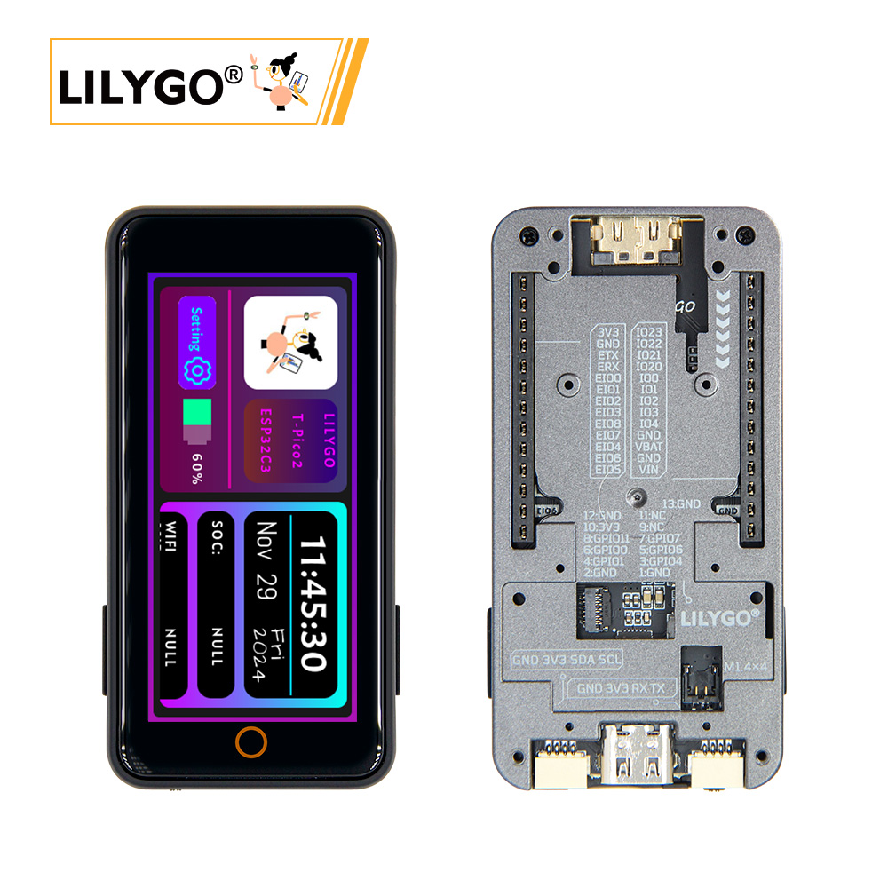
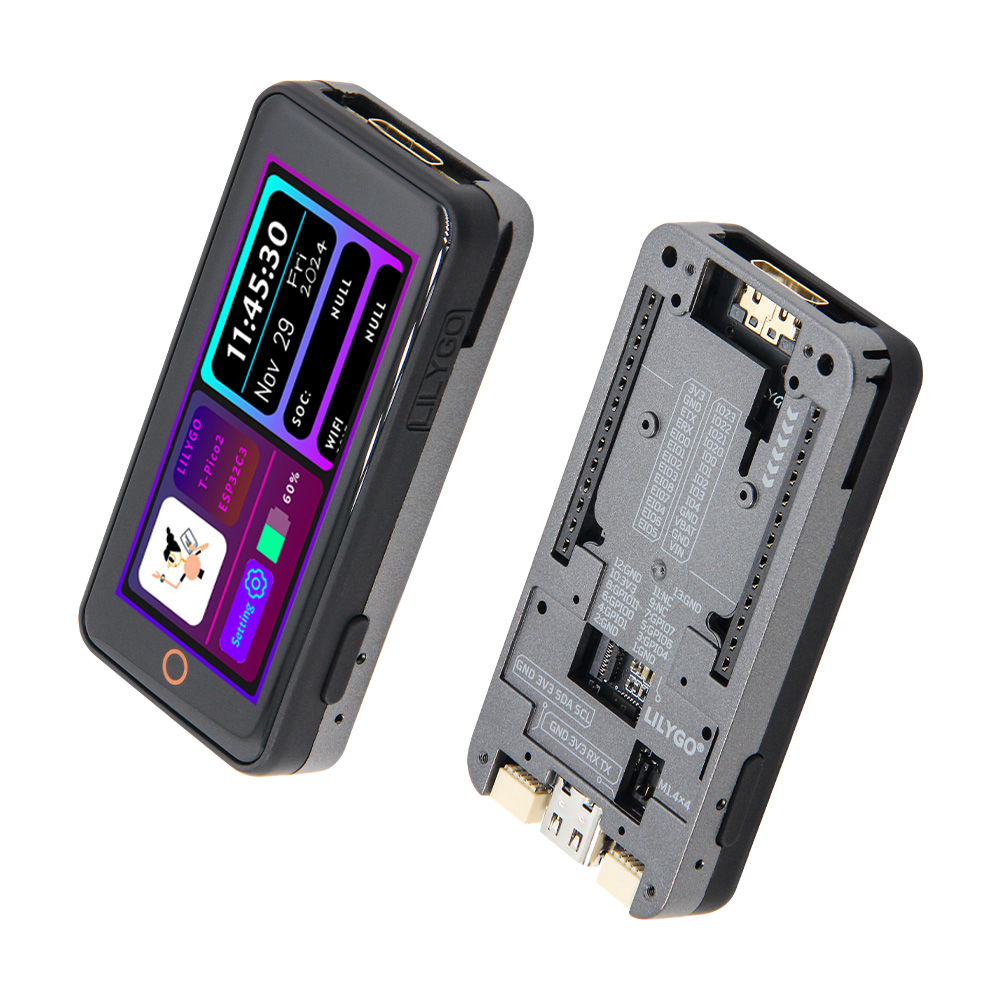
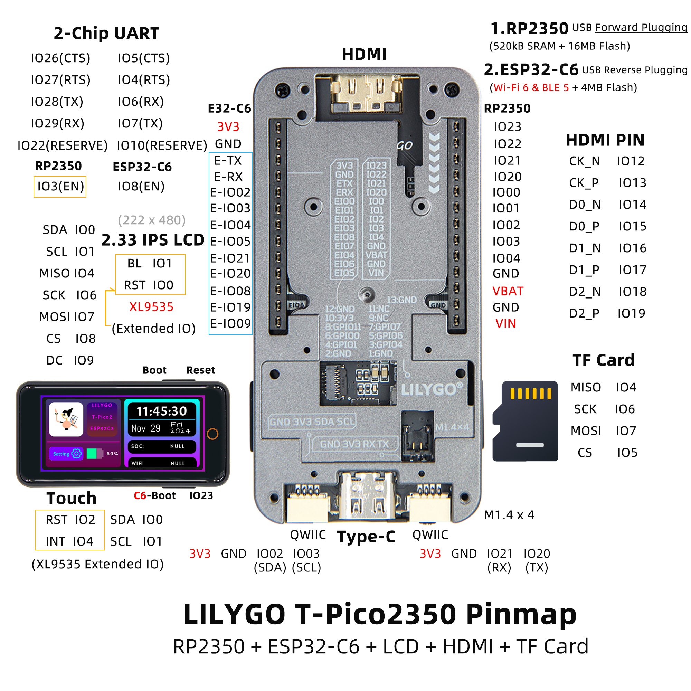
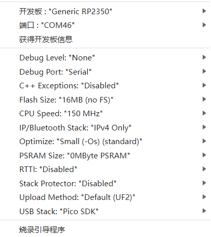

中文 简体
中文 简体LILYGO T-PICO-2350

版本迭代:
| Version | Update date | Update description |
|---|---|---|
| T-PICO-2350_V1.2 | 2024-01-01 | 初始版本 |
购买链接
| Product | Main SOC | Wireless SOC | Flash | Link |
|---|---|---|---|---|
| T-PICO-2350 | RP2350 | ESP32-C6 | 16MB + 4MB | LILYGO Mall |
目录
描述
T-PICO-2350 是延续T-Pico系列的另外一款基于树莓派芯片RP2350设计制造的版本，采用T-Display S3 Pro外部扩展版本的外壳设计，这个外壳设计的特点是预留了多种外部功能扩展设计的接口，支持排母的扩展模式和13pin 0.3间距的FPC扩展接口模式，同时底部预留了多个M1.4的内嵌铜螺母用于底部扩展固定使用。集成了RP2350+ESP32-C6+2.33寸电容触摸屏+TF卡+HDMI接口+2个QWIIC接口+PMU，支持电池供电和USB供电，USB接口延续了T-Pico系列的设计，通过正反插可以对两个芯片进行编程。
预览
实物图

引脚图

模块
主处理器 (RP2350)
- 芯片：树莓派 RP2350
- Flash：16MB
- SRAM：520kB
- 其他说明：更多资料请访问树莓派RP2350文档
无线协处理器 (ESP32-C6)
- 芯片：ESP32-C6-MINI-1U-N4
- Flash：4MB
- 无线协议：2.4G WiFi 6 + 蓝牙(BLE)
- 无线标准：802.11b/g/n
屏幕
- 尺寸：2.33英寸IPS LCD
- 驱动芯片：ST7796S
- 总线通信协议：SPI
触摸
- 芯片：XL9535
- 总线通信协议：I2C
扩展接口
- HDMI：19pin HDMI接口
- QWIIC：2 × QWIIC接口
- IO接口：2×13 扩展IO接口
- FPC接口：13pin 0.3mm间距FPC扩展接口
概述
| 组件 | 描述 |
|---|---|
| 主处理器 | RP2350 |
| 无线协处理器 | ESP32-C6-MINI-1U-N4 |
| Flash | 16MB (RP2350) + 4MB (ESP32-C6) |
| SRAM | 520kB (RP2350) |
| 屏幕 | 2.33英寸 IPS LCD |
| 触摸 | XL9535 I2C电容触摸 |
| 存储 | TF卡 |
| 视频输出 | HDMI接口 |
| 无线 | WiFi 6 + BLE (ESP32-C6) |
| 扩展接口 | 2×13 IO + 2×QWIIC + FPC |
| 电源管理 | 集成PMU |
| 供电方式 | 电池供电 + USB供电 |
| 固定孔位 | 4 × M1.4mm |
| 编程接口 | 正反插USB可分别编程两个芯片 |
快速开始
示例支持
| Example | PlatformIO/Arduino | C/C++ | Description |
|---|---|---|---|
| Factory | ✓ | ✓ | 出厂示例 |
| （更多示例请参考GitHub仓库） |
- 更多 RP2040 或 RP2350 芯片功能示例，请参考 arduino-pico-libraries
- 更多 ESP32-C6 芯片功能示例，请参考 arduino-esp32-libraries
- ESP32-C6 AT命令集
新用户指南
- 首次使用时，需要使用 Zadig 替换驱动以正确识别端口。
T-PicoPro采用可逆Type-C设计，分别对应 RP2350 的端口和 ESP32-C6 的USB端口。- 如何识别 RP2350 的端口？
- 按住
T-PicoPro侧面的 BOOT 按钮，然后插入 USB-C。如果电脑将其识别为磁盘，那么这就是 RP2350 的端口。
- 按住
- 除了作为UART外，T-PicoPro 的
QWIICUART端口也可以用作普通IO。 QWIICI2C端口不能用于其他用途，只能配置为I2C接口，因为它连接到屏幕触摸和PMU。- ESP32C6 使用了修改过的AT固件，
交换了TX和RX。您可以在此处找到AT固件的自定义编译方法 这里。 - ESP32-C6 默认AT固件编译于
V3.3.0-dev。该固件已简单修改（添加了GPIO控制功能），源代码可以在 这里 找到，具体更改请参见 commit。 - T-PicoPro 充电指示灯可以通过软件关闭。如果未连接电池，指示灯会闪烁。
PlatformIO 快速开始（推荐）
- 安装 Visual Studio Code 和 Python
- 在
VisualStudioCode扩展中搜索PlatformIO插件并安装 - 安装完成后，需要重启
VisualStudioCode - 重启
VisualStudioCode后，选择左上角文件->打开文件夹-> 选择T-PicoPro目录 - 等待第三方依赖库安装完成
- 点击
platformio.ini文件，在platformio列中 - 取消注释其中一行
src_dir = xxxx，确保只有一行生效 - 点击左下角的 (✔) 符号进行编译
- 将开发板连接到电脑USB
- 点击 (→) 上传固件
- 点击 (插头符号) 监控串口输出
- 如果无法写入，或USB设备不断闪烁，请查看下面的 常见问题
Arduino IDE 快速开始
- 推荐使用 platformio，无需繁琐步骤
- 安装 Arduino IDE
- 安装 Arduino Pico
- 下载或克隆
T-PicoPro到任意位置 - 将 lib文件夹 中的所有文件夹复制到Arduino库文件夹（例如 C:\Users\你的用户名\Documents\Arduino\libraries）
- 打开 ArduinoIDE，
工具，看图选择

T-PicoPro文件夹 ->examples->任意示例- 选择
端口 - 点击
上传，等待编译和写入完成 - 如果无法写入，或USB设备不断闪烁，请查看下面的 常见问题)
引脚总览
XL9535 是 RP2350A 的外部扩展 IO 端口。
| RP2350A | XL9535 | ESP32-C6 | TFT | SD | BUTTON | HDMI | QWIIC | UART1 | FLASH | DRAM | |
|---|---|---|---|---|---|---|---|---|---|---|---|
| IO0(SDA) | ↔ | PIN47(TP_SDA) | |||||||||
| IO1(SLC) | ↔ | PIN48(TP_SCL) | |||||||||
| IO2 | ↔ | SDA1 | |||||||||
| IO3 | ↔ | SCL1 | |||||||||
| IO2 | ↔ | PIN50(TP_RST) | |||||||||
| IO4 | ↔ | PIN49(TP_INT) | |||||||||
| IO0 | ↔ | PIN35(TF_RST) | |||||||||
| IO1 | ↔ | PIN35(TF_BL) | |||||||||
| IO4(MISO) | ↔ | PIN11 | SD_MISO | ||||||||
| IO6(SCK) | ↔ | PIN8 | SD_SCK | ||||||||
| IO7(MOSI) | ↔ | PIN10 | SD_MOSI | ||||||||
| IO8(TFT_CS) | ↔ | PIN6 | |||||||||
| IO9(TFT_DC) | ↔ | PIN7 | |||||||||
| IO5(SD_CS ) | ↔ | SD_CS | |||||||||
| IO12 | ↔ | CK_N | |||||||||
| IO13 | ↔ | CK_P | |||||||||
| IO14 | ↔ | D0_N | |||||||||
| IO15 | ↔ | D0_P | |||||||||
| IO16 | ↔ | D1_N | |||||||||
| IO17 | ↔ | D1_P | |||||||||
| IO18 | ↔ | D2_N | |||||||||
| IO19 | ↔ | D2_P | |||||||||
| IO6 | ↔ | HOTPLUGDET | |||||||||
| IO20(TX) | ↔ | RX | |||||||||
| IO21(RX) | ↔ | TX | |||||||||
| IO23 | ↔ | BTN1 | |||||||||
| IO22(RESERVE) | ↔ | IO10(RESERVE) | |||||||||
| IO3 | ↔ | IO8(EN) | |||||||||
| IO26(CTS) | ↔ | IO5(CTS) | |||||||||
| IO27(RTS) | ↔ | IO4(RTS) | |||||||||
| IO28(TX) | ↔ | IO6(RX) | |||||||||
| IO29(RX) | ↔ | IO7(TX) | |||||||||
| PIN55(SD3) | ↔ | IO3 | SIO3 | ||||||||
| PIN58(SD2) | ↔ | IO2 | SIO2 | ||||||||
| PIN59(SD1) | ↔ | IO1 | SIO1 | ||||||||
| PIN57(SD0) | ↔ | IO0 | SIO0 | ||||||||
| PIN56(SCLK) | ↔ | SCLK | SCLK | ||||||||
| PIN60(FLASH_CS) | ↔ | IO3 | |||||||||
| IO25(RAM_CS) | ↔ | CS | |||||||||
| （详细引脚定义请参考原理图） |
相关测试
（双核通信、功耗、显示性能测试数据待补充）
常见问题
如果写入失败但显示成功：
- 通过USB线连接开发板
- 按住（侧面）BOOT键的同时按下（同侧）RST键
- 释放（侧面）RST键
- 释放（侧面）BOOT键
- 上传程序
如何写入 ESP32-C6？
- 由于
ESP32-C6复位引脚由RP2350控制，当需要更新ESP32-C6固件时，请勿在RP2350的程序中包含控制ESP32-C6复位引脚的操作。 - 按住 ESP32-C6 模块侧面的 esp32 BOOT 按钮并插入 USB-C。确保插入的是 "ESP32-C6" 的USB端口侧。电脑应该能够正常写入 "ESP32-C6"。
- 由于
如何检查硬件是否正常？
- 请按照 常见问题 的第一步操作，将 firmware 目录中的
firmware.uf2拖入磁盘。程序包含硬件自检，可以判断硬件是否正常。
- 请按照 常见问题 的第一步操作，将 firmware 目录中的
为什么串口没有输出？
- 在 arduino IDE 中，选择工具栏中的
调试端口："串口"。 - 请打开串口助手工具的
DTR选项。
- 在 arduino IDE 中，选择工具栏中的